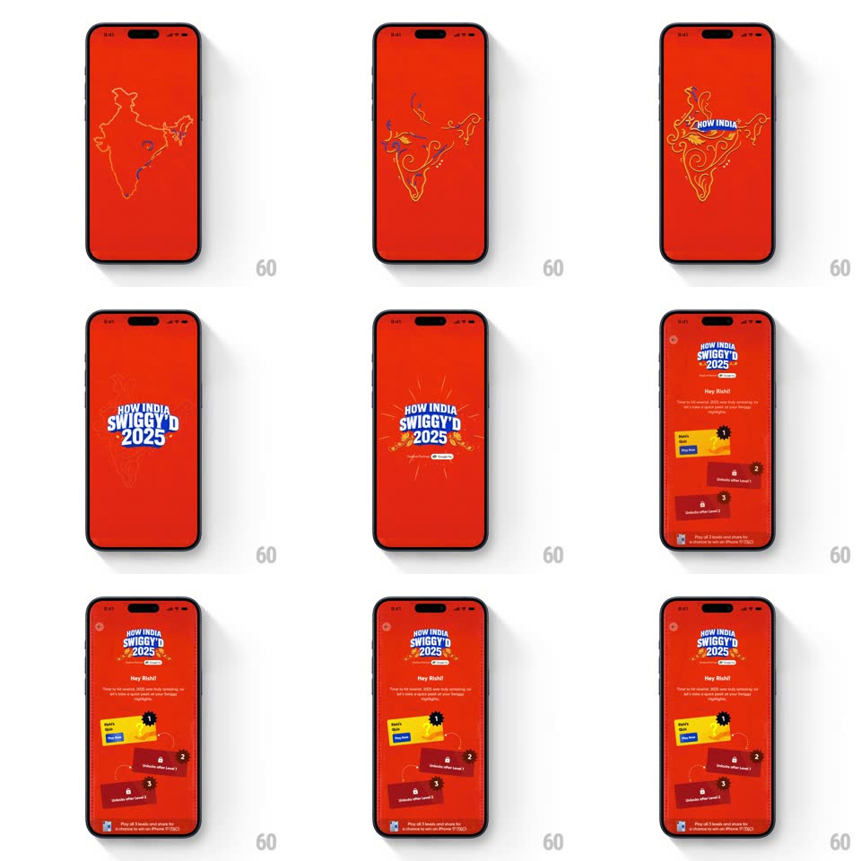

Media
Frame-by-frame

Rebuild this animation 1:1: Swiggy's "How India Swiggy'd 2025" intro - a line-drawn India map blooms with decorative swirls, the logo bursts in with rays, and the level dashboard staggers up beneath a personal greeting.

Rebuild this animation 1:1: Swiggy's "How India Swiggy'd 2025" intro - a line-drawn India map blooms with decorative swirls, the logo bursts in with rays, and the level dashboard staggers up beneath a personal greeting.
## Integration
Integration: stack-agnostic spec - springs given as stiffness/damping, timed motions as duration + curve; map every value to your framework and animation library of choice.
## Scene
Swiggy red throughout: first a line-drawn map of India that grows ornate swirls; then the "HOW INDIA SWIGGY'D 2025" logo bursting center with radiating rays; finally the dashboard - "Hey Rishi!" with a sub line, three level cards (Level 1 yellow "PLAY NOW", Level 2 and 3 locked with padlocks and "Unlocks after Level N"), and the iPhone-prize footnote.
## Motion spec
Pattern: multi-stage intro - map draw, logo burst, staggered dashboard.
- The map's outline draws itself in light strokes (1.2s stroke draw), then decorative swirls spiral out from its edges (600ms, growing paths), then the whole map recedes (scale 1 -> 0.9, fading to 30%, 400ms).
- The logo bursts in over it: letters pop with a shared spring (scale 0.6 -> 1.08 -> 1, spring ~380/12) while short rays blast outward (scale 0 -> 1, 250ms) and settle into a gentle rotating shimmer (10s loop).
- The dashboard builds bottom-up: "Hey Rishi!" and its sub line fade up (12px rise, 300ms), then the three level cards stagger in from the bottom (100ms apart, 24px rise, 350ms each, slight 2deg settle tilt).
- Level 1's card is yellow and bright with a blue PLAY NOW pill; the locked cards arrive dimmer with their padlock icons dropping in last (scale 0.8 -> 1, 200ms each).
- The footnote fades in final (200ms).
## Calibration
- The map is a drawing, not a photo: visible stroke-draw timing, then swirl growth - no fade-in shortcut.
- The logo burst is one decisive pop - rays and letters land within 300ms of each other.
## Reduced motion
Map fades in, logo fades in, dashboard cards fade up without stagger or tilt.
## Don't miss
- The greeting is personalized ("Hey Rishi!") - it leads the dashboard, above every card.
- Locked levels show their unlock condition on the card ("Unlocks after Level 1") - the progression rules are visible, not hidden.